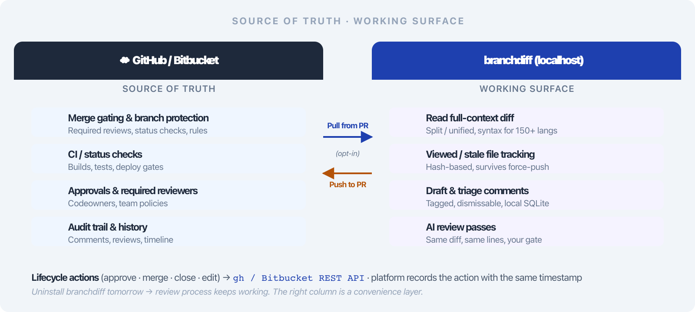

Deck 02 · branchdiff features
100% local-first & private.
The diff never leaves your machine. No telemetry, no signup, no API key — and your comments, viewed markers, and UI state survive a reboot, a force-push, and a fresh clone.
0 outbound calls
~/.branchdiff/ SQLite sessions
no auth, no key, no signup
localhost:5391
02 · the problem
Cloud diff tools ship your code to a third party.
The friction
Reviewing proprietary code in a browser-based diff means every line travels to a third-party server. Compliance and security teams object — and they're right to.
The data loss
PR comments vanish when you're offline or when a branch is deleted without merging. UI state (which file you'd scrolled to, which you'd marked viewed) is tied to a folder path and disappears the moment you clone elsewhere.
The result: "I can't use this tool on this repo" — and a draft review that took an hour evaporates the next morning because the tab refreshed or the branch was rebased.
03 · the solve
The diff never leaves your machine.
branchdiff runs as a plain Node HTTP server bound to localhost. It reads the diff from disk, persists everything to SQLite under ~/.branchdiff/, and identifies your repo by a fingerprint that follows the repo — not the directory.
0
Outbound traffic
except user-triggered gh / Bitbucket REST
SQLite
Local persistence
survives restarts, reboots, force-pushes
1
Repo fingerprint
state follows the repo, not the path
No telemetry, no API key, no signup. The only network calls are the ones you explicitly trigger — approve a PR, post a comment, fetch a branch.
04 · mental model
The forge is the source of truth. branchdiff is the working surface.

GitHub / Bitbucket stay the source of truth · branchdiff is the fast, private, local working surface
Two-way sync, one-way authority. Comments flow up to the forge on your action; everything else — drafts, viewed markers, collapse state — stays local until you decide otherwise.
05 · local execution
A plain Node HTTP server — bound to localhost.
- No daemon listening on the open internet. The server binds to localhost; only your browser on the same machine can reach it.
- No telemetry, no analytics. Zero outbound traffic in steady state — confirmable with any network monitor.
- No API key, no signup. No account on a branchdiff server exists — there is no branchdiff server.
- The only network calls are user-triggered: gh for GitHub, Bitbucket REST for posting comments or PR actions.
- Open source. You can read every line of the network path before you trust it with proprietary code.
For compliance teams: "the diff is processed on the engineer's laptop, by software we can audit, and the bytes never leave the machine." That sentence unblocks the review.
06 · persistence
Everything lives in ~/.branchdiff/.
- Comment threads, replies, viewed markers, collapse state, tours — all in SQLite, one DB per repo.
- Survives restarts and reboots. Close the laptop, fly home, reopen — your place is exactly where you left it.
- Per-repo directory keyed by a stable repo hash, so two repos never collide.
- Repo fingerprint (next slide) means the same repo on two machines writes to the same logical store.
~/.branchdiff/
# one directory per repo, keyed by repo hash
~/.branchdiff/
├── a1b2c3d4e5/ # repo fingerprint dir
│ ├── sessions.db # comments, replies, viewed
│ ├── ui_state.db # collapse, viewed, filters
│ └── tours.db # AI-generated code tours
└── credentials.json # optional: Bitbucket token
07 · repo fingerprint
State follows the repo, not the directory.
A stable ID is derived from the repo's remotes — upstream > origin > first remote — and falls back to local:<hash> when there are no remotes. The same repo on two laptops, or across a fork, converges on the same fingerprint.
Without a fingerprint
UI state is keyed by folder path. Clone the repo to ~/work/project on a new machine and every viewed marker, every collapse, every draft is gone — even though it's the same codebase.
With a fingerprint
The repo identifies itself by its remotes. ~/src/project on your laptop, ~/code/project on the CI box, a fork you cloned to debug — all resolve to the same logical store.
Converges across forks and clones. Comment on a fork today; the same threads surface when you clone upstream tomorrow — they share a fingerprint.
08 · no auth
No login. Reuse the credentials you already have.
GitHub · one-time
$ gh auth login
# ✓ Logged in as encryptioner
# branchdiff reads gh's token — nothing else to configure
$ branchdiff
# → syncs comments, posts reviews via gh
Bitbucket · App Password
# option A — env var
$ export BITBUCKET_APP_PASSWORD="…"
$ export BITBUCKET_USERNAME="encryptioner"
# option B — credentials file
~/.branchdiff/credentials.json
{ "bitbucket_app_password": "…" }
No new account, ever. GitHub users get a one-line gh auth login; Bitbucket users drop an App Password into env or a credentials file. That's the entire auth story.
09 · portable bundles
Take your work with you — one JSON file.
- export --all writes sessions, threads, replies, tours, and uiState to a single JSON.
- Bundle format v2 — includes UI state, LWW-merged on import by updated_at.
- Three import modes: --merge (default), --skip, --overwrite.
- --dry-run previews the merge before touching anything.
export & import
$ branchdiff export --all
# → wrote branchdiff-bundle-2026-07-27.json
$ branchdiff import bundle.json --merge
# merged 47 threads, 312 viewed markers
# (LWW by updated_at)
$ branchdiff import bundle.json --dry-run
# preview: 2 conflicts, both newer locally
Why it matters: move a review in progress to a new machine, hand a draft to a teammate, or back up before a destructive operation — without losing a single viewed marker.
10 · stale-tab guard
An old tab can't silently overwrite a fresh server.
- Random SERVER_ID per boot — assigned when the process starts, never reused.
- X-Branchdiff-Server-Id header on every write request from the UI.
- UI polls /api/info in the background; mismatch → amber banner, traffic blocked.
- Server returns 409 STALE_SERVER if the header doesn't match — writes refused, not silently applied.
The scenario this prevents: you restart branchdiff in tab A. Tab B — left open from yesterday — keeps writing comments against the old server ID. Without the guard, those writes hit the wrong session or get lost. With it, tab B shows the amber banner and refuses to send.
11 · honest boundaries
What branchdiff doesn't do.
Saying this out loud so the rest of the deck reads as honest, not salesy.
Not a silver bullet
No CI. Platform checks still gate the merge — branchdiff reads diffs, it doesn't run your pipeline.
No cloud storage. Wipe ~/.branchdiff/ and unpushed local drafts are gone. Export/import is your backup.
Multi-reply threads stay local. Forge APIs don't map a threaded reply tree, so only top-level comments push up.
Stays in its lane
No branch-protection bypass. Merge respects required reviews and status checks exactly as the forge enforces them.
Not a full PR-page replacement. Description, linked issues, and the CI block stay on the forge — Open in browser is one click.
Local-first is a real trade-off. No server means no shared workspace — which is the point, and the cost.
12 · hands-on
Inspect and reset your local state — from the CLI.
branchdiff info
$ branchdiff info
repo fingerprint a1b2c3d4e5f6…
source origin (github.com:acme/payment-svc)
sessions 3
comment threads 47 (12 open, 31 resolved, 4 dismissed)
viewed markers 312
ui state size 18 KB
$ branchdiff state reset
# → cleared UI state (viewed markers, collapse, filters)
# → threads and replies preserved
Nothing is hidden. The store is plain SQLite on disk; info is the same data, summarised. You can also cat the file or open it in any SQLite browser.
13 · recap
Local-first, in one line.
No outbound traffic, no telemetry, no signup. SQLite under ~/.branchdiff/ survives reboots and force-pushes. A repo fingerprint means state follows the repo. Stale tabs can't silently corrupt a fresh server.
- Plain Node HTTP bound to localhost — compliance-friendly, auditable.
- SQLite sessions: threads, replies, viewed markers, collapse state, tours.
- Repo fingerprint: same repo, two machines, one logical store.
- No auth — reuse gh or a Bitbucket App Password.
- Export/import bundle v2 with LWW merge and --dry-run.
- Stale-tab guard via X-Branchdiff-Server-Id + 409 STALE_SERVER.